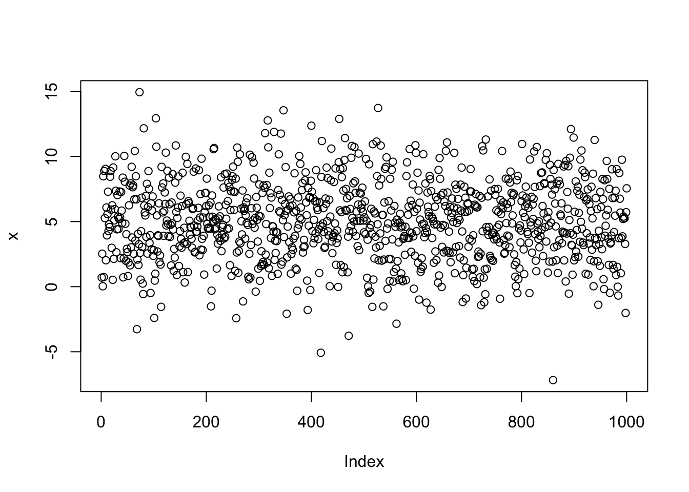

sample(1:6, size=1)[1] 6Et on a tous envie de dire, enfin ! Et vue la promesse, on peut faire durer le plaisir et en remettre une petite couche avant, avec la génération de nombres aléatoires.
La fonction sample permet d’échantillonner au sein d’un vecteur existant. Vous devenz préciser ce vecteur, puis le nombre de tirages à effectuer, avec ou sans remise.
Si vous n’avez pas de dé, en voilà un :
sample(1:6, size=1)[1] 6Avec size=3, replace=TRUE vous pouvez même jouer au 421. Ou encore générer un tirage de loto sans les boules qui s’agitent :
sample(1:49, size=6, replace=FALSE)[1] 9 47 36 14 4 34Chaque élément du vecteur a autant de chance de sortir qu’un autre.
Si vous préférez le scrabble, vous pouvez aussi utiliser sample mais en calibrant l’argument probs sur la fréquence des lettres dans la langue française. N’allez donc pas vous taper l’alphabet à la main, jetez un oeil à letters et LETTERS.
Au delà des vecteurs existants, vous pouvez générer des nombres aléatoires issus d’une distribution. Toutes les distributions disponibles sont listées dans la bien nommée page ?Distributions.
Ces fonctions sont nommées de la façon suivante {r, p, q, d}nom_abregé_distrib. La première lettre désigne la variante désirée des différentes fonctions pour une distribution donnée, selon que l’on veuille générer des nombres, la densité de probabilité, les quantiles associés, etc.
Pour générer 10 nombres aléatoires compris entre -1 et 1 on peut par exemple :
runif(10, 0, 1) # see ?runif [1] 0.1193610 0.4918118 0.7741212 0.3069952 0.7218488 0.4027434 0.4372506
[8] 0.8760479 0.8498670 0.4134920Dans le même esprit on peut tirer 1000 nombres issus d’une distribution normale de moyenne 5 et d’écart-type 3 avec la commande suivante :
x <- rnorm(1e3, 5, 3)
mean(x)[1] 5.028203sd(x)[1] 3.0148931e3 est la notation dite “ingénieur” parfaitement comprise par R. Ici, on a 1 suivi de 3 zéros, soit 10^3 soit 1000. Vous constaterez également que la moyenne est à peu près de 5 et l’écart type à peu près égal à 3.
Si vous réexécutez cette commande, vous aurez un autre vecteur avec des valeurs différentes mais également à peu près centré sur 5.
y <- rnorm(1e3, 5, 3)
mean(x) - mean(y)[1] -0.01312834Si vous désirez générer des nombres aléatoires certes, mais les mêmes, par exemple d’une session à l’autre ou (c’est la même chose) sur l’ordinateur de votre collègue, c’est possible avec la fonction set.seed. Du hasard sous contrôle : beauté sans nom !
Tapez ceci et comparez avec votre voisin·e.
set.seed(2329)
rnorm(10) [1] 0.4446356 1.4954342 -1.9777602 0.1251240 -1.4107758 -1.0692797
[7] -1.1781869 0.7524880 0.5883426 -0.1579436Allez, on y vient.
Décrire un vecteur de nombres avec mean et sd mais faire des jolis graphes c’est mieux. La commande plot est la fonction de base pour ce faire :
plot(x)
R a compris que chaque valeur du vecteur x devait être plottée sur l’axe de ordonnées et en a déduit que l’axe des abscisses devait être la série de 1 à 1000. Ici un histogramme serait plus approprié pour décrire la distribution de notre vecteur de nombres aléatoires :
hist(y)
On voit qu’il est bien centré sur 5. Si l’on augmente le nombre de valeurs générées ainsi que le nombres d’intervalles (breaks en anglais), on retrouve une bien belle gaussienne :
hist(rnorm(1e5, 5, 3), breaks=50, main="Un histogramme")Les graphiques de base de R sont un peu surannés depuis l’avènement de gpplot2 que nous verrons en détail plus loin mais ils ont encore leur mot à dire, même s’il ne s’exprimeront pas longuement ici.
Voyons tout de même ce que l’on peut faire avec iris, l’un des nombreux jeux de données livrés avec R1.
head(iris) Sepal.Length Sepal.Width Petal.Length Petal.Width Species
1 5.1 3.5 1.4 0.2 setosa
2 4.9 3.0 1.4 0.2 setosa
3 4.7 3.2 1.3 0.2 setosa
4 4.6 3.1 1.5 0.2 setosa
5 5.0 3.6 1.4 0.2 setosa
6 5.4 3.9 1.7 0.4 setosaplot(Petal.Length~Petal.Width, data=iris, col=Species,
xlab="Largeur de pétale (cm)", ylab="Longueur de pétale (cm)",
main="Les fameux iris de Fisher (voire d'Anderson)")
En petit aguichage ggplot2 voilà ce qu’on peut obtenir dans le même temps :
library(ggplot2)
ggplot(iris) +
aes(x=Petal.Width, y=Petal.Length, col=Species) +
geom_jitter(alpha=0.5) +
geom_smooth(method="lm", formula="y~x") +
facet_grid(~Species) +
xlab("Largeur de pétale (cm)") +
ylab("Longueur de pétale (cm)") +
ggtitle("Les fameux iris de Fisher (voire d'Anderson)") +
theme_linedraw()voir ?datasets.↩︎
❤ Placé dans le domaine public par Vincent Bonhomme